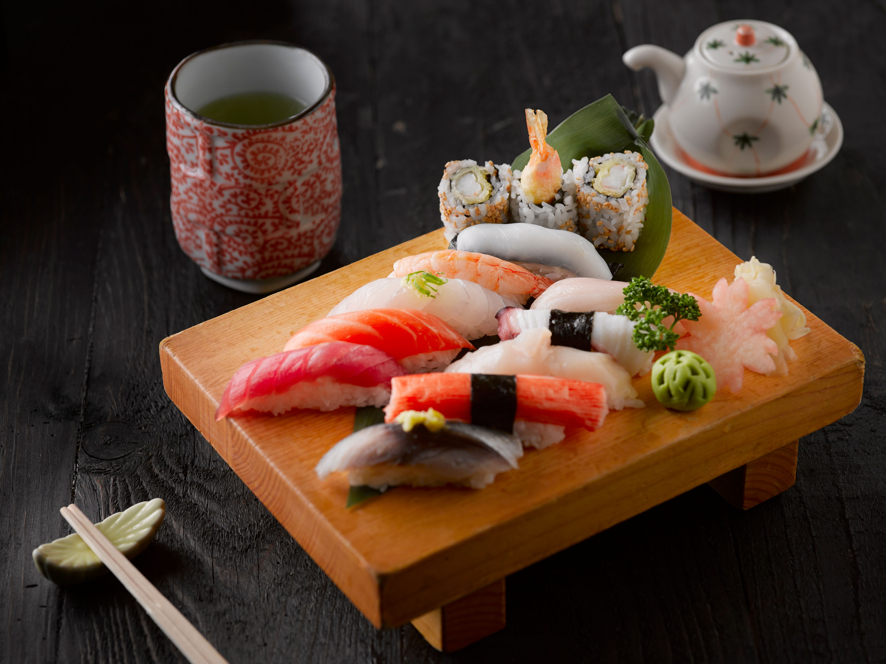

Sushi

>
Description
plat japonais traditionaire
Ingrédients
- poisson cru
- riz
- vinaigre du sushi
- sauce soja
- wasabi
- gari
Étapes
- Rincer le riz à sushi plusieurs fois
- Faire cuire le riz selon les instructions du paquet
- Mélanger le vinaigre de riz avec le sucre et le sel
- Ajouter ce mélange au riz encore chaud et laisser refroidir
- Placer une feuille de nori sur une natte à sushi
- Étaler une fine couche de riz sur la feuille de nori
- Ajouter le saumon et l'avocat au centre
- Rouler le sushi à l'aide de la natte
- Couper le rouleau en plusieurs morceaux
- Servir avec de la sauce soja
Accueil